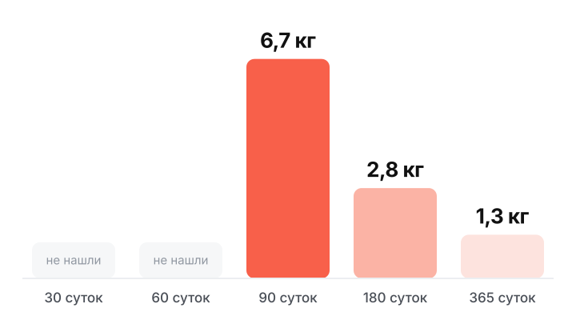
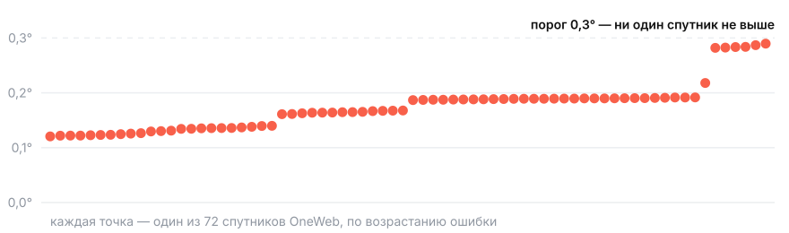

Буксир переводит спутник с орбиты попутного запуска на целевую при ограниченном запасе топлива. ДРЕЙФ считает план манёвра по сроку и расходу ксенона на примере «СКАУТ» компании А-РОКЕТС.
Попутный запуск везёт десятки аппаратов и выпускает их в одну плоскость. Каждому клиенту нужна своя. Повернуть плоскость двигателем «СКАУТ» не может: на 15° нужно 3,1 км/с, а у буксира на всю жизнь 2,0–2,8 км/с.
Вход: массы, орбита попутного запуска, плоскость клиента, срок. Выход: выполнимо ли, каким планом, за сколько суток и ксенона.
сдвиг плоскости на 15° с орбиты 550 км, ксенон на манёвр

90 суток вместо 180 стоят в 2,4 раза больше ксенона. На борту 25,8 кг. Буксир 150 кг и груз 50 кг, тяга только на свету. Прямой численный полёт подтвердил ксенон с точностью до 6 %.
Из-за сплюснутости Земли плоскость орбиты поворачивается сама: на 550 км на 0,99° в сутки, на 740 км на 0,90°. Буксир поднимается, ждёт, пока разница наберёт нужный угол, и спускается уже в плоскости клиента. Топливо идёт только на подъём и спуск.
Прямой манёвр, дрейф и их сочетание
Форма Земли, тень, атмосфера, расход массы
Срок, ксенон и допущения
два запуска индийской LVM3, плоскости ушли на 64–123° за 9–14 месяцев

максимальное расхождение угла узла в конце наблюдений
Живой калькулятор: выберите сдвиг плоскости и срок, и он покажет план полёта, сутки и ксенон.
andrew-ug.github.io/brics-ideathon-2026Оператор меняет срок 180 → 90 → 60 суток. Планировщик пересчитывает стратегию и ксенон и честно говорит, когда решения нет.
Риск: масса и режимы «СКАУТ» не опубликованы. Показываем диапазон результатов при заданных допущениях.
Резерв: расчётный скрипт, три готовых сценария и статический отчёт уже есть.
Инженеры ISRO пишут, что для электрических миссий учёт поворота орбиты «is also crucial», и откладывают его на будущее. Мы считаем ровно это. К 2030 году ISRO требует уводить отработавшие аппараты с успехом больше 99 %.
Индия (NSIL) и Китай (CAS Space) продают места на своих ракетах. Довезти аппарат от общей орбиты до своей — работа буксира. ОАЭ свой кубсат PHI-1 запускали американской ракетой.
«Союз» 5.11.2024 вывел 53 аппарата, среди них иранские Kowsar и Hodhod. Иран в БРИКС с 2024 года. Один запуск, и каждому аппарату нужна своя орбита.
Начнём с проверки расчёта у разработчика буксира. Код открыт: агентства и университеты стран БРИКС могут проверить модель на данных своих спутников.